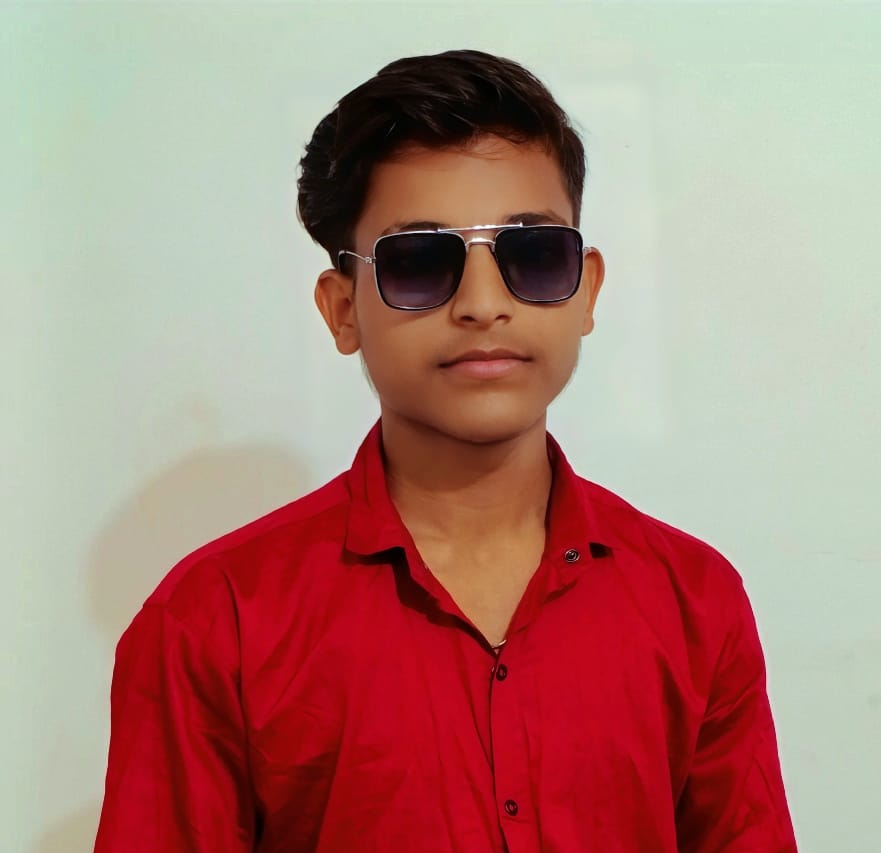

BCA Student | Aspiring Cyber Security & Web Professional
Email: ik6306583.com | Location: India | linkedin profile, whatsapp profile, instagram profile,
Computer applications aur cyber security ke field me practical knowledge build karne ka irada hai. Main web fundamentals, network basics aur systems ko secure karne ki technical skills me grow karna chahta hu.
Computer science fundamentals, software development aur web technologies ki padhai.
HTML, inline CSS aur basic JavaScript verification se ek functioning authentication page design kiya.
CSS card layout aur structured sections ke sath responsive static resume website build ki.